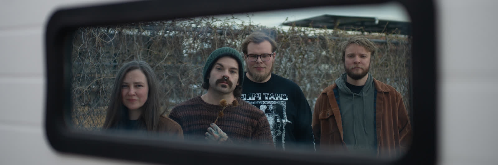

S/NC RECORDSSINGLE EPK
Animal Future
This Hell
SNCR-002 · SingleOut Sep 17, 2026 · 3:33
Rock / art rock · from the debut LP Survived By, 2027
Rock / art rock · from the debut LP Survived By, 2027

“It’s a wonder we haven’t all gone insane. Or have we?”

FromSurvived By — debut LP, 2027
Written byWarren / Tyrie / Ford
Produced byKevin Cook & Doug Wooldridge
Mixed + masteredDoug Wooldridge @ S/NC Studio